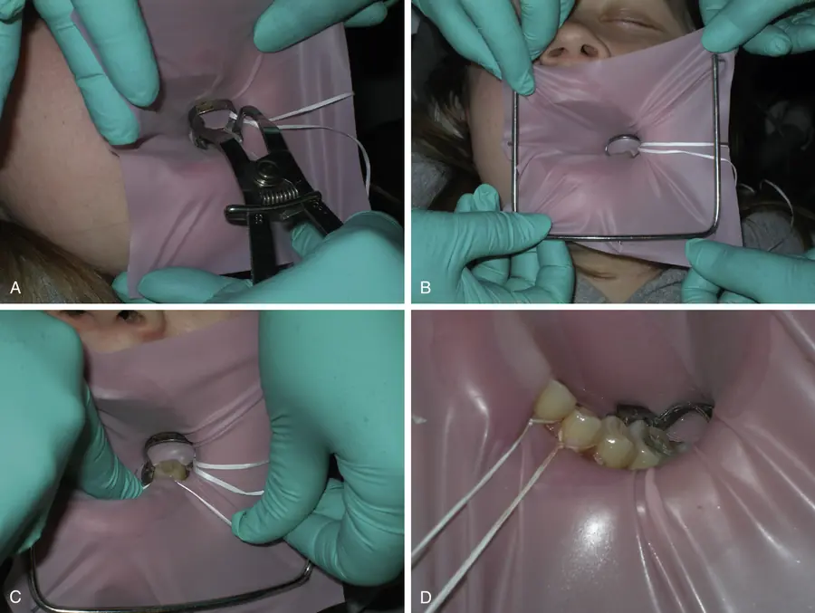

نسخه استخراجشده؛ ترجمه یا تأیید علمی انجام نشده است. وضعیت: captured
دختری ۷ ساله برای ترمیم دو مولر شیری بالا آمده و کلمپ روی مولر دوم شیری نشسته است. کودک دهانش را تا آخر باز کرده، ولی سوراخ ورق از روی کمان کلمپ رد نمیشود؛ کمان به لبهی جلوی راموس چسبیده است. چه کنی؟

یک روال رایج در کودک، روش کلمپ اول است:
در مولر آخر بالا، دهان کاملاً باز کمان را به راموس میچسباند. از کودک بخواه دهانش را کمی ببندد؛ راموس عقب میرود و ورق میان کمان و راموس رد میشود. ورقی که خیلی سفت روی فریم کشیده شده، هنگام رد شدن از روی کمان کلمپ را از جا درمیآورد.
ترتیب گذاشتن در کودک یکی نیست. برخی کلمپ را درون ورق و با کمک دستیار به دهان میبرند و فریم را آخر وصل میکنند؛ برخی ورق سوراخنشده را روی فریم میکشند، سوراخ میزنند، ورق و فریم را روی دندان لنگر میگذارند و بعد کلمپ را.
پس از کلمپ، ورق را روی جلوترین دندان ایزوله ثابت کن: با وج چوبی بیندندانی، یک تکه ورق رابردم که از تماس رد شده، یا لیگاتور نخ دندان. برای لیگاتور، دستیار نخ را در لینگوال با ابزار غیربرنده رو به لثه نگه میدارد؛ تو از باکال محکم میکشی و زیر برجستگی سرویکال گره جراحی میزنی. سرهای نخ را کوتاه نکن؛ سر بلند یادت میآورد لیگاتور آنجاست. بعد بقیهی دندانها را بیرون بیاور و لبهی ورق را با ابزار غیربرنده اینورت کن.
برای یک کوادرانت ترمیم دندان شیری، دو سوراخ با فاصلهی حدود ۱۳ میلیمتر (نیم اینچ) بزن و میانشان را با قیچی ببُر. کل کوادرانت بیسپتوم بیرون میآید و گذاشتن خیلی سریع است. چون ورقی میان دندانها نیست، کنترل رطوبت کمتر قابل اعتماد است، ولی اغلب کافی است، بهویژه در فک بالا. اگر درمان پالپ پیشبینی میشود، این روش را کنار بگذار.
نکتهی طلایی: رابردم در کودک کوتاهمدتتر است؛ روال ثابت و دستیار آماده، گذاشتن را به چند ده ثانیه میرساند.